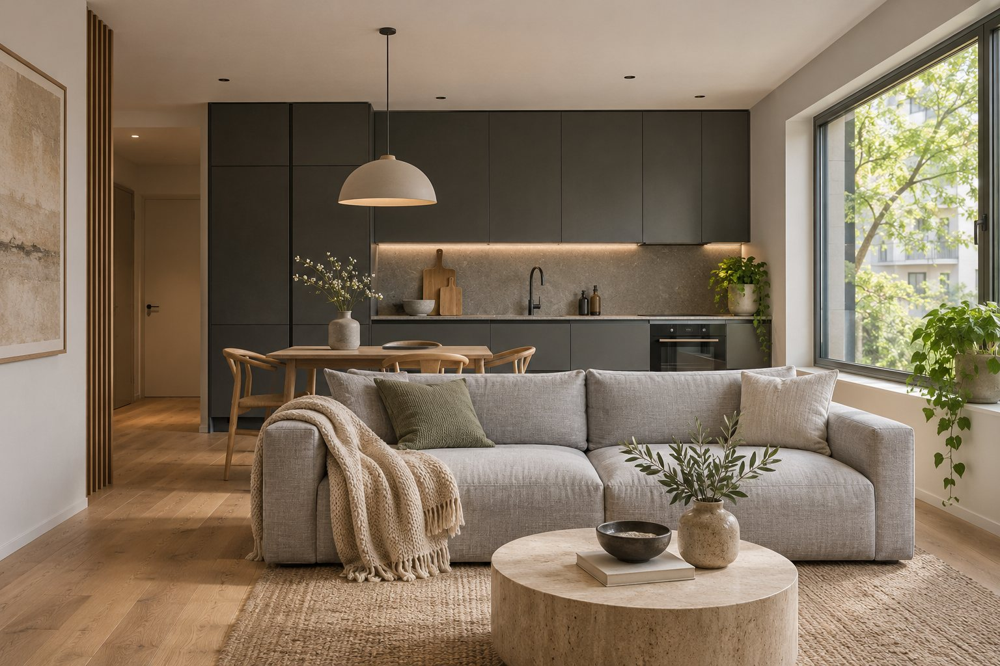
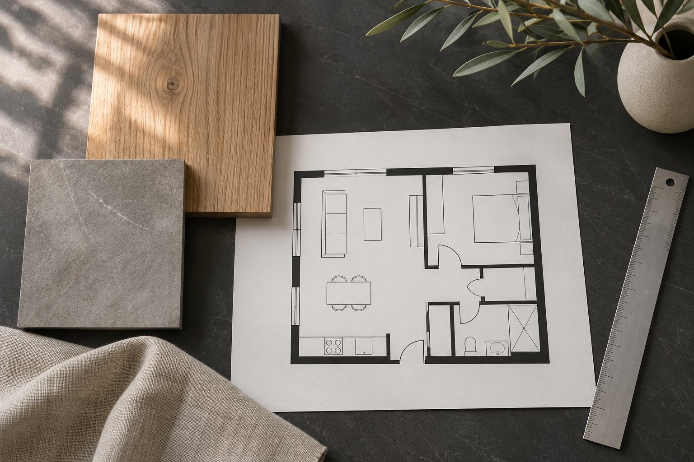
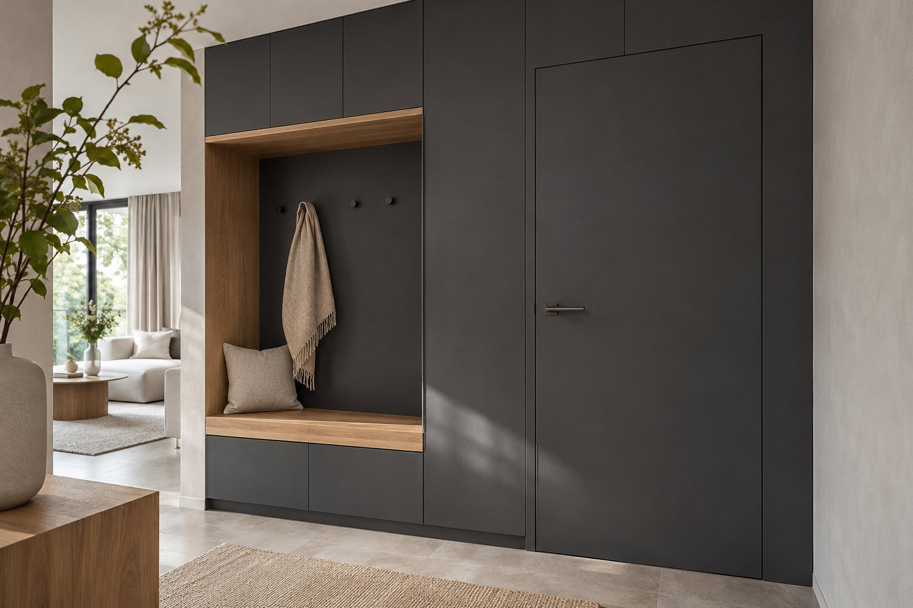

Жилые интерьеры / кейс-концепт
Квартира, в которой всё на своём месте
Спланировать квартиру до начала ремонта.

Задача
В условной квартире свободная планировка, а привычки будущих жильцов ещё не переведены в чертежи. Нужны отдельное место для работы, понятное хранение и кухня, открытая в гостиную. Сначала проверяем, как пространство будет работать каждый день, затем собираем решения для ремонта.
Что сделали

Сценарии жизни
Фиксируем состав семьи, хранение, рабочее место и бытовые маршруты.
Планировка
Сравниваем варианты расстановки и согласуем проходы, двери и мебель.
Материалы и свет
Сводим отделку, освещение и встроенную мебель в одну систему.
Рабочий комплект
Собираем планы, развёртки и ведомости. Уточняем ограничения со смежными специалистами.
Единый комплект для обсуждения ремонта

Узел хранения в прихожей: переход от образа к деталям.
Планы мебели, света и розеток, развёртки ключевых стен, ведомость материалов и визуальный образ. Конструктивные изменения и инженерные расчёты согласуются отдельно.
План мебели / пример
Условная схема, не обмерный план.
Состав проекта / пример
Демонстрационный фрагмент, не рабочая документация.
| Лист | Что проверяем |
|---|---|
| План мебели | Проходы и открывание дверей |
| План освещения | Группы света и выключатели |
| Развёртка кухни | Привязки мебели и оборудования |
| Ведомость отделки | Материал, зона, единица измерения |
Этапы и срок
После оценки площади и состава проекта
- Бриф и обмерные данные
- Варианты планировки
- Образ и рабочие листы
- Проверка и передача
Ориентир по стоимости
3 500 ₽/м²
Пример расчёта: 50 м² × 3 500 ₽ = 175 000 ₽. Обмеры, согласования и авторское сопровождение уточняются отдельно.
Итоговый состав, срок и стоимость фиксируем после разбора исходных данных.